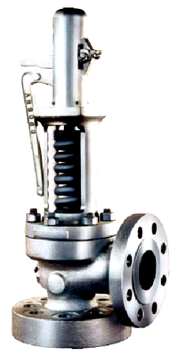

Subsection 4.2.6 Pressure Relief Valves
Relief valves are protective devices designed to open automatically when the pressure in the line unit becomes too high. Although there are different types of relief valves, the most common type has a disk that is held in the closed position by a coil spring. When the pressure in the line or machine creates a force great enough to overcome the spring force, the disk moves upward and is opened. After the pressure has been relieved by the escape of fluid through the relief valve, the spring again exerts enough force to close the disk.

Relief valves have no hand-wheel operator, but may be equipped with a lever attached to the valve stem which the operator can use to momentarily open the valve, in order to test that the valve can open properly, or to blow out debris such as rust or dirt, which if lodged between the disk and seat would cause the valve to leak.
Relief valves are designed to work properly with any type of fluid, while safety valves are only designed to work with gases.
Most relief valves are set to open when the pressure against the disk reaches 110% of the Maximum Allowable Working Pressure (called the MAWP) of the system or machine. For example, if a system operates with a MAWP of 100 psi, then the relief valve would open at 110 psi.
Relief valves are designed to close at a pressure lower than their opening pressure (The difference between opening and closing pressure is called blowdown). This is done to prevent valve chattering, which is a rapid opening and closing of the valve. Chattering is undesirable because it can damage the seat and disk. If the valve opened and closed at exactly the same pressure, it would chatter, because as soon as it opened, the pressure would drop and cause the valve to close, and as soon as it closed the pressure would cause it to open again.
Chattering is prevented by exposing an additional disk surface area to the fluid pressure immediately after the valve opens. This increased area, acted upon by the fluid pressure, increases the force against the spring, and makes the valve open rapidly once it starts to open, but it will not close again until the pressure falls significantly below the opening pressure.
It must be remembered that the coil spring force acting when the valve begins to open is the same as the spring force acting when the valve closes. Since \(F = PA \text{:}\)
\begin{equation*}
P_o A_o = P_c A_c
\end{equation*}
Where:
- \(P_o\) is the Opening pressure.
- \(P_c\) is the Closing pressure.
- \(A_o\) is the Opening area.
- \(A_c\) is the Closing area.
Remember, the extra surface area is not available until the valve disk opens.
A relief valve opens at 250 psi and has a bottom surface area when closed of 0.75 \(\text{in}^2\text{.}\) When the valve opens, the bottom surface area increases by 10%. What pressure does the valve close at?